Методы создания градиентных заливок линий.
 При создании бизнес диаграмм иногда возникает необходимость в красочном обрамлении фигур этой диаграммы, но Visio позволяет делать контур только одного цвета. Существует несколько способов обойти это ограничение. Все красивые градиентные заливки в Visio это не что иное, как просто ступенчатое изменение цвета на какую-то величину. Если этих ступеней перехода цвета много, то для глаза этот переход будет казаться сплошным.
При создании бизнес диаграмм иногда возникает необходимость в красочном обрамлении фигур этой диаграммы, но Visio позволяет делать контур только одного цвета. Существует несколько способов обойти это ограничение. Все красивые градиентные заливки в Visio это не что иное, как просто ступенчатое изменение цвета на какую-то величину. Если этих ступеней перехода цвета много, то для глаза этот переход будет казаться сплошным.
Рассмотрим несколько примеров с увеличивающимся числом ступеней.
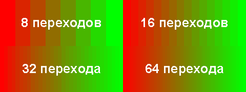
Как видно на рисунке, после 64 ступеней для глаза они уже незаметны, но для Visio они представляют собой просто множество фигур со сплошной заливкой. Теперь достаточно создать новый узор линии, поместить созданную сплошную заливку и все, она готова к применению.
Теперь необходимо создать этот новый узор. Этот способ работает только для Visio 2000. Это связано с особенностью представления прямоугольников для метафайлов в последующих версиях. Делается это следующим образом:
Создается узор линии. Для этого необходимо сделать видимым окно Обозревателя чертежа (Drawing Explorer window), в меню выбрать Вид4Окно Обозревателя чертежа (View4Drawing Explorer window). В окне выбираем «Узоры линии» левой кнопкой мыши и в контекстном меню выбираем Создать узор…(New pattern…). В диалоговом окне назначаем имя (Градиент, например) и нажимаем ОК.
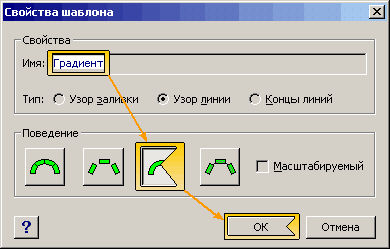
Теперь выбираем только что созданный узор и нажимая правой кнопкой мыши в контекстном меню выбираем Изменить узор (Edit pattern). В открывшемся окне рисуем прямоугольник 1х5 мм. Убираем линию обводки этого прямоугольника, либо через панель инструментов, либо через диалоговое окно в меню Формат4Линия...(Format4Line…) и в разделе «Шаблон» выбрать Отсутствует (None).
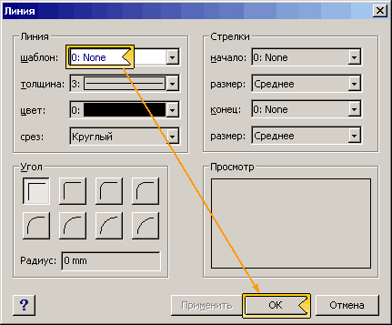
Делаем заливку необходимыми цветами через диалоговое окно в меню Формат4Заливка...(Format4Fill…) или нажатием F3 (например с красного на синий, вертикально).
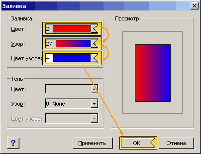
Выделяем прямоугольник и вырезам его (Ctrl+X), в меню выбираем, Правка4Специальная вставка… (Edit4Paste Special…) и в появившемся окне выбираем Рисунок (расширенный метафайл)(Picture (Enhanced Metafile)).
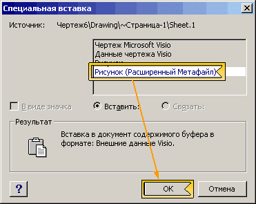
Разгруппируем полученную фигуру (Ctrl+U) (этим преобразуем его в Visio объекты) и сгруппируем (Ctrl+G). И теперь выходим из окна редактирования, соглашаясь на обновление узора.
Создадим предполагаемую фигуру (прямоугольник с округлением углов) и в диалоговом окне выберем шаблон линии на название только что созданной заливки линии. Недостатками данного способа являются, медленность работы на слабых машинах (очень много объектов), невозможность использования очень темных цветов (программа будет воспринимать их как шаблон цвета узора). К достоинствам данного способа относится простота.
Следующий способ является самым долгим, но он будет иметь возможность изменять цвет заливки линии и работает во всех версиях Visio. Для начала необходимо создать в ТаблицеФигур документа Раздел Ячейки пользователя. Для этого в окне Обозревателя чертежа на имени документа нажимается правая кнопка и в контекстном меню выбирается Показать ТаблицуФигуры (Show ShapeSheet).
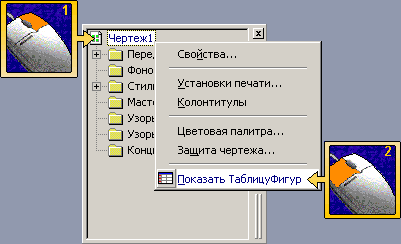
Далее в любом пустом месте этой таблицы нажать на правую кнопку мыши и выбрать в контекстном меню Вставка раздела…(Insert Section…).
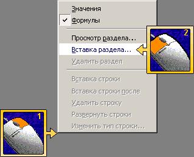
В диалоговом окне вставки раздела отметить раздел Ячейки пользователя (User-Defined Cells) и нажать ОК.
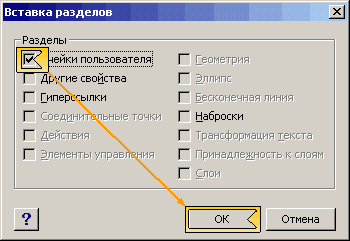
Теперь необходимо создать еще одну строку в этом разделе. Для этого надо нажать на строке этого раздела и в появившемся меню выбрать Вставка строки (Inser Row).
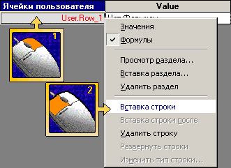
С этой таблицей все. Закрываем ее.
Теперь необходимо создать узор линии, как было описано выше. Дальнейшие действия производятся в окне редактирования узора. В этом окне необходимо создать квадрат с размерами 5х5 мм. Первой созданной фигурой будет фигура с ID (уникальным номером) равным 5. Следующей созданной фигурой будет фигура с ID равным 6 и т.д.
Для созданного прямоугольника необходимо внести изменения в ТаблицуФигур. Для этого надо выделить этот квадрат и в меню выбрать Окно4Показать ТаблицуФигур (Window4Show ShapeSheet). Нужно в разделе Формат заливки внести следующие изменения:
Для Visio 2000 и Visio 2002
В ячейку FillForegnd:
=RGB(RED(TheDoc!User.Row_1)-(RED(TheDoc!User.Row_1)-RED(TheDoc!User.Row_2))/64*(ID()-5);GREEN(TheDoc!User.Row_1)-(GREEN(TheDoc!User.Row_1)-GREEN(TheDoc!User.Row_2))/64*(ID()-5);BLUE(TheDoc!User.Row_1)-(BLUE(TheDoc!User.Row_1)-BLUE(TheDoc!User.Row_2))/64*(ID()-5))
Для Visio 2003
В ячейку FillForegnd:
=RGB(RED(TheDoc!User.Row_1)-(RED(TheDoc!User.Row_1)-RED(TheDoc!User.Row_2))/64*(ID()-5),GREEN(TheDoc!User.Row_1)-(GREEN(TheDoc!User.Row_1)-GREEN(TheDoc!User.Row_2))/64*(ID()-5),BLUE(TheDoc!User.Row_1)-(BLUE(TheDoc!User.Row_1)-BLUE(TheDoc!User.Row_2))/64*(ID()-5))
Далее необходимо скопировать этот квадрат (переместить с зажатой кнопкой Ctrl), потом еще раз, затем скопированные.
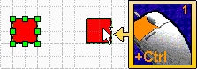
Т.е. удваивание копируемых прямоугольников пока их не станет 64.
Далее в 65 (он будет такого же цвета, что и 1-й) прямоугольник нужно в разделе Формат заливки внести следующие изменения:
Для Visio 2000 и Visio 2002
В ячейку FillForegnd:
=RGB(RED(TheDoc!User.Row_1)-(RED(TheDoc!User.Row_1)-RED(TheDoc!User.Row_2))/64*(ID()-70);GREEN(TheDoc!User.Row_1)-(GREEN(TheDoc!User.Row_1)-GREEN(TheDoc!User.Row_2))/64*(ID()-70);BLUE(TheDoc!User.Row_1)-(BLUE(TheDoc!User.Row_1)-BLUE(TheDoc!User.Row_2))/64*(ID()-70))
Для Visio 2003
В ячейку FillForegnd:
=RGB(RED(TheDoc!User.Row_1)-(RED(TheDoc!User.Row_1)-RED(TheDoc!User.Row_2))/64*(ID()-70),GREEN(TheDoc!User.Row_1)-(GREEN(TheDoc!User.Row_1)-GREEN(TheDoc!User.Row_2))/64*(ID()-70),BLUE(TheDoc!User.Row_1)-(BLUE(TheDoc!User.Row_1)-BLUE(TheDoc!User.Row_2))/64*(ID()-70))
И снова скопировать, пока общее количество не станет 128.
Т.е. получатся 2 полных перехода из первого цвета во второй, а если получится часть третьего перехода, ее следует удалить.
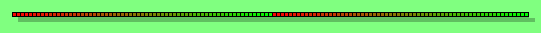
Далее необходимо выделить 1 полный переход, сгруппировать и обратить горизонтально (Ctrl+H). Так получается один полный переход из одного цвета и обратно. Теперь выделив все фигуры и разгруппировав все на отдельные фигуры, выберите в меню Формат4Поведение...(Format4Behavior...). В диалоговом окне отметьте "Только изменения положения"(Reposition only).
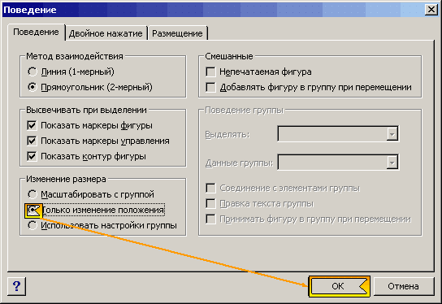
Затем сгруппируйте все фигуры сразу в одну группу. Делаем фигуры без обводной линии. Уменьшив ширину группы в двое (645 mm-320 mm), получаем половинное перекрытие фигур. Далее необходимо обновить маркеры фигуры. Для этого выделяем группу и выбираем в меню Фигура4Операции4Обновить маркеры фигуры (Shape4Operations4Update Alignment Box). И наконец, закрываем окно редактирования, соглашаясь на обновление узора. Далее необходимо выбрать фигуру, указать в качестве шаблона «Градиент». Теперь надо зайти в ТаблицуФигур данной фигуры и создать Раздел Действия.
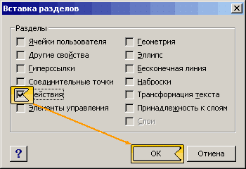
Добавить строку к этому разделу и внести изменения:
В ячейку Action первой строки:
=SETF(GetRef(TheDoc!User.Row_1);LineColor)
В ячейку Menu первой строки:
="Установить первый цвет линии"
И создать вторую строку.
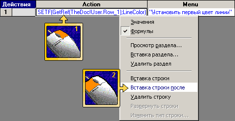
В ячейку Action второй строки:
=SETF(GetRef(TheDoc!User.Row_2);LineColor)
В ячейку Menu второй строки:
="Установить второй цвет линии"
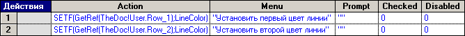
Теперь выбрав первый цвет в настройках линии и нажав правой кнопкой мыши на фигуре и в меню выбрав «Установить первый цвет» установите первый цвет градиентной заливки линии.
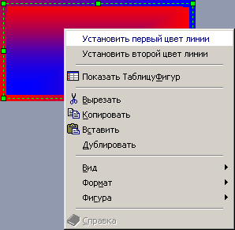
Повторив операцию, выберите второй цвет линии. Теперь просто сменив цвет линии третий раз, получите результат.
Логично предположить, что если сделать пересчет цвета в двух направлениях, то получится настраиваемая градиентная заливка, возможности которой будут выше, чем встроенные в Visio.
Примеры из статьи.
В начало раздела
Предыдущая статья
Следующая статья
Автор: Ничков Алексей (Digitall)